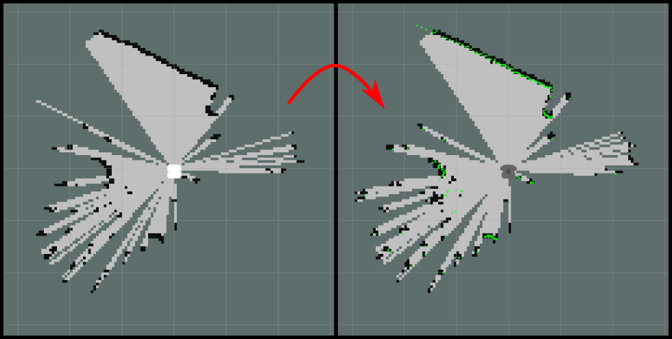

Having completed the steps on the previous page, your robot and laptop should now be paired, and ROS should be up and running. The next thing to do is bring the robot to life! Here are a few simple exercises for you to have a go at, to get a feel for things...
You can use some ROS tools that you will be familiar with from simulation in order to see the real world through the eyes of the robot!
Open up a new terminal instance on the laptop (which we'll call TERMINAL 1). From here, enter the following command:
TERMINAL 1:
roslaunchtuos_tb3_toolsrviz.launch
Pro Tip
We've got a handy bash alias for this command: use tb3_rviz instead (if you want to)!
This will launch RViz, which (as you may recall from your simulation work) is a ROS tool that allows us to visualise the data being measured by a robot in real-time.
The red dots scattered around the robot is the data from the LiDAR sensor.
The strange wobbly sheet of colours in front of the robot is the live image stream from the camera with depth applied to it at the same time. The camera is able to determine how far away each image pixel is from the camera lens, and then uses that to render the image in 3-dimensions. Nice eh!?
Place your hand or your face in front of the camera and hold steady for a few seconds (there may be a bit of a lag as all of this data is transmitted over the WiFi network). You should see yourself rendered in 3D in front of the robot!
Another tool that you'll be familiar with from Week 6 is rqt_image_view. Again, we can use this to view live image data being streamed to ROS image topics. Open another terminal instance on the laptop (TERMINAL 2) and launch this as follows:
TERMINAL 2:
rosrunrqt_image_viewrqt_image_view
Select /camera/color/image_raw in the dropdown topic list to see the images being obtained and published by the robot's camera.
Use these tools to keep an eye on your robot's environment whilst performing the next exercise...
Exercise 2: Driving the robot around using the laptop keyboard¶
We used the turtlebot3_teleop_keyboard node extensively in simulation to drive a Waffle around a range of simulated environments. This works in exactly the same way with a real robot in a real world!
Open another new terminal instance (TERMINAL 3) and enter exactly the same roslaunch command as you've used in simulation to launch the turtlebot3_teleop node:
A Catkin Workspace exists on the laptop's filesystem here:
/home/student/catkin_ws/
a.k.a.:
~/catkin_ws/
Remember
Much like in simulation, always create ROS packages in the catkin_ws/src/ directory!
In TERMINAL 1 navigate to the Catkin Workspace src directory:
TERMINAL 1:
cd~/catkin_ws/src/
Create a new package here using the catkin_create_pkg tool. Don't forget to include rospy as a dependency!
TERMINAL 1:
catkin_create_pkg{your_package}rospy
Using Git?
Already created a ROS package in simulation? Why not push it to GitHub (or GitLab, etc.) and git clone it here instead?
Next, don't forget to run catkin build:
TERMINAL 1:
catkinbuild{your_package}
Then, re-source your environment:
TERMINAL 1:
source~/.bashrc
Pro Tip
You can also use the src alias, just like in simulation!
Exercise 4: Using SLAM to create a map of the environment¶
Remember how you used SLAM in Week 3 to create a map of a simulated environment? We'll do this now on a real robot in a real environment!
In TERMINAL 2 enter the following command to launch all the necessary SLAM nodes on the laptop:
TERMINAL 2:
roslaunchturtlebot3_slamturtlebot3_slam.launch
Pro Tip
Also available as an alias: tb3_slam!
This will launch RViz again, where you should now be able to see a model of the Waffle from a top-down view surrounded by green dots representing the real-time LiDAR data. The SLAM tools will already have begun processing this data to start building a map of the boundaries that are currently visible to your robot based on its location in the environment.
Note
To begin with your robot may just appear as a white shadow (similar to the left-hand image below). It may take some time for the robot to render correctly (like the right-hand image) as the SLAM processes and data communications catch up with one another.

This can sometimes take up to a minute or so, so please be patient! If (after a minute) nothing has happened, then speak to a member of the teaching team.
Return to TERMINAL 3 and launch the turtlebot3_teleop_keyboard node again. Start to drive the robot around slowly and carefully to build up a complete map of the area.
Tip
It's best to do this slowly and perform multiple circuits of the whole area to build up a more accurate map.
Once you're happy that your robot has built up a good map of its environment, you can save this map using the map_server package (again, in exactly the same way as you did in simulation):
First, create a new directory within your {your_package} package on the laptop (to save maps in). You should still be in your package directory in TERMINAL 1, so head back to that one:
There's no harm in running this, just to make sure that you're in the right place to begin with:
TERMINAL 1:
roscd{your_package}
Create a directory in here called maps:
TERMINAL 1:
mkdirmaps/
Navigate into this directory:
TERMINAL 1:
cdmaps/
Then, use rosrun to run the map_saver node from the map_server package to save a copy of your map:
TERMINAL 1:
rosrunmap_servermap_saver-f{map_name}
Replacing {map_name} with an appropriate name for your map. This will create two files:
a {map_name}.pgm
a {map_name}.yaml file
...both of which contain data related to the map that you have just created.
The .pgm file can be opened in eog on the laptop:
TERMINAL 1:
eog{map_name}.pgm
Return to TERMINAL 2 and close down SLAM by pressing Ctrl+C. The process should stop and RViz should close down.
Close down the teleop node in TERMINAL 3, if that's still going too.